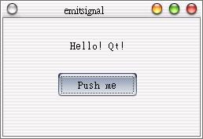
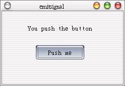
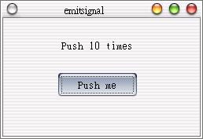

| 在程式進行到某個時段時，我們會希望丟出一個自訂的Signal通知指定的函式開始工作，要丟Signal必須在類別中有定義，並使用emit來丟出Signal；以下這個例子包括三個檔案：showpush.h、showpush.cpp與main.cpp。 首先編輯showpush.h：
#ifndef LCDRANGE_H 再來是編輯showpush.cpp：
#include "showpush.h" 最後是編輯main.cpp：
#include <qapplication.h> 大致上這個範例與上一個範例大部份相同，我們解釋主要變更的部份。 在showpush.h中，我們自訂了兩個Slots與一個Signals，其中Slot - setlabelText2(int)將接收up10(int)所傳出的整數訊息，如果不想帶有這個訊息的話，int可以省去： public slots:
void setlabelText1(); void setlabelText2(int); signals: void up10(int); 在showpush.cpp中，我們將Signal - up10(int)連接至Slot - setlabelText2(int)： connect(this, SIGNAL(up10(int)), SLOT(setlabelText2(int)));
在這個函式中，主要注意到Signal的發射是使用emit，我們在發射Signal時同時帶有變數 i 的訊息： void ShowPush::setlabelText1() {
i++; if(i < 10) label->setText("You push the button"); else { emit up10(i); i = 0; } } 在這個函式中，我們會接受Signal所傳送的訊息至n，在這邊我們使用QString來作字串的操作，QString可以使用 + 運算子來作方便的字串連接，而要將整數轉為QString則是使用QString::number()這個方法： void ShowPush::setlabelText2(int n) {
QString text = "Push "; text = text + QString::number(n) + " times"; label->setText(text); } 這個程式在您按下按鈕後10次會顯示"Push 10 times"的文字訊息，以下為操作時的三個畫面： 操作前：  操作中：  按10次：  |
|